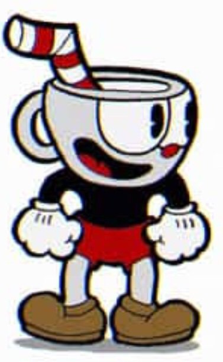
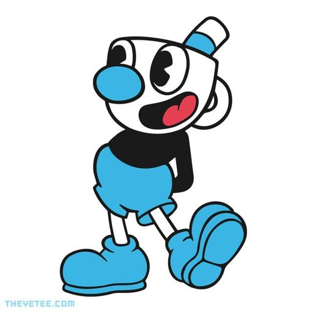
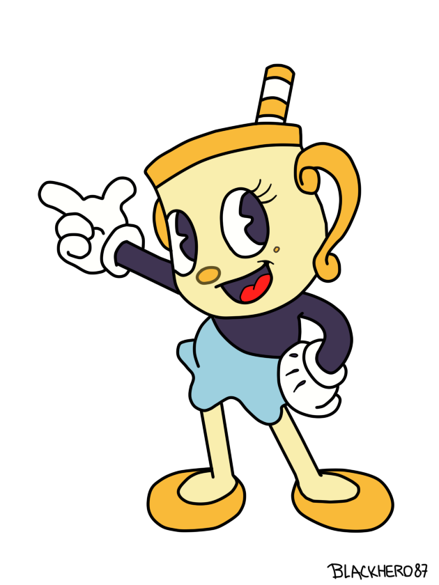
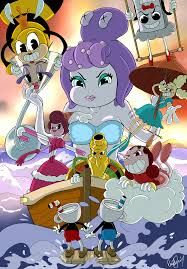

Cuphead
Cuphead com toda sua força conseguiu derrotar "Genésio, o magnifico"
e com isso liberou acesso a loja da ilha tinteiro II
na loja temos:
Perseguidor
Bacamarte
Obus
Vai-e-vem
entre outros...

Mugman
Mugman partiu em sua carreira solo, e está se arriscando cada vez mais
pra lutar com os mais diverssos chefes dos sete mares.
como por exemplo:
- Cala Maria
- Capitão Barba Salgada

Mr. Cálice
Mr. Cálice ajudou muito na confeitaria do Pitadinha, fez várias propagandas
e melhorou as receitas para ficarem mais deliciosas e mais saudáveis!
como:
bolotrúfas
rosquinhetas
murfins
cookies (não recomendado para xícaras)

Nas Ilhas Tinteiro I,II,III e IV vem aos poucos se criando uma "Máfia Feminina" que vem ficando
cada vez mais forte e com mais integrantes,a rumores que tem algum infiltrado ajudando na contratação
da máfia.

Alugumas suspeitas apontam que a criadora da "Máfia" tenha sido a "Cala Maria", ela teria criado por ser a mais forte e
poderosa de todas,e quis ganhar o poder total da ilha, e assumir o controle de tudo.
Possíveis integrantes:
Cala Maria(Dona Iara)
Baronesa Von Bombom
Cactônio Spinoza
Paula Protagonista
Piroleta
Geni Buarque
Abélia Reale